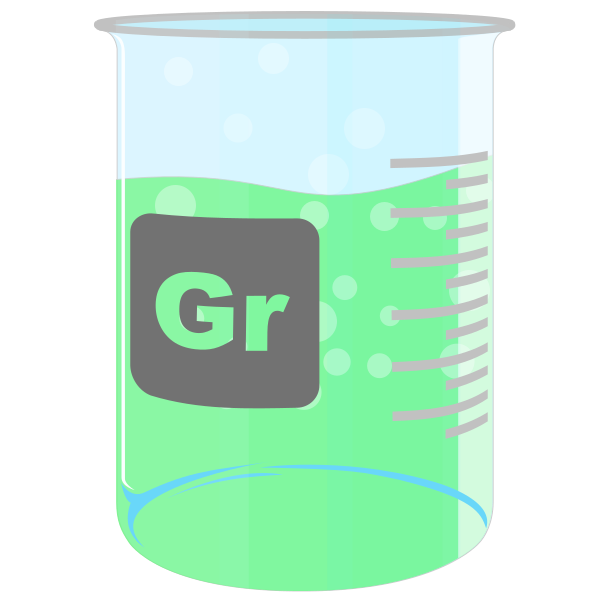
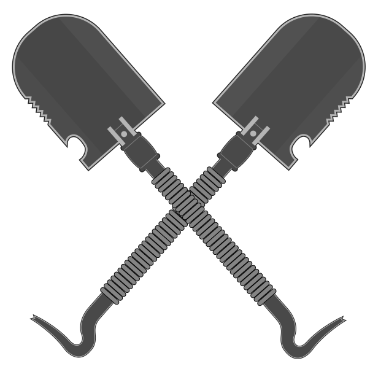

Method
The Secret Formula
Work
View our Projects
Team
A Network of Talent
Learn
Tutorials and Research
24 Nov 2012 »
New Nikon 50mm Lens
It was not easy to find but I picked up my new nikon 50mm f/1.8 lens. I’m still using my old trusty D70 while I...
Read more...
23 Nov 2012 »
Black Friday Analysis
Yet another Black Friday has come and gone. How did your black friday specials pan out? I will be doing an in depth analysis on...
Read more...
17 Nov 2012 »
Migrating to Jekyll from Wordpress
Always on the lookout for ways to improve my websites and workflow I stumbled upon a ruby based framework called Jekyll. What is Jeckyll? In...
Read more...
About Us
The Graphic Rustication Company was originally starting in Irvine, CA by my father in the 1970's. Quickly GRC became known for unmatched quality and creativity that pushed the envelope of what many had previously conceived as multimedia commercial design. I revived the Graphic Rustication Co. to create a beautiful, and highly functional graphics, signs, and web interfaces. A blending of old lost techniques with new technology and tools.